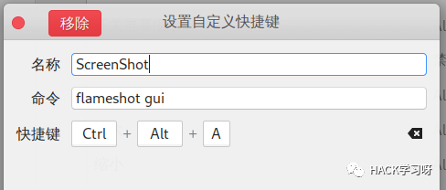
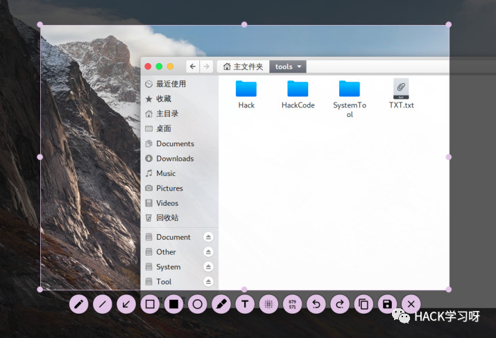
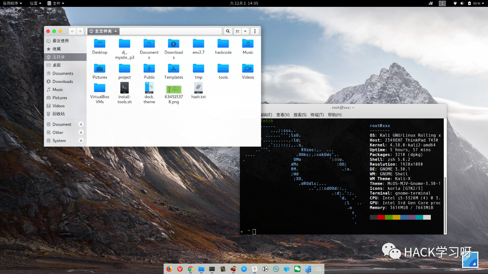
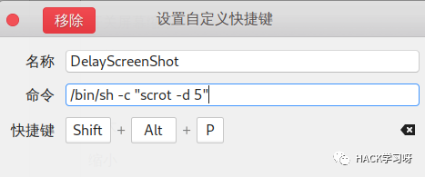
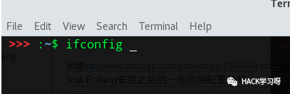
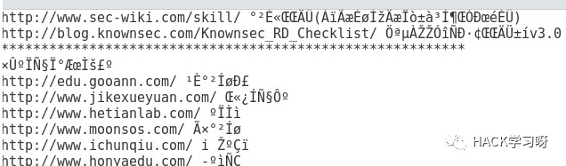
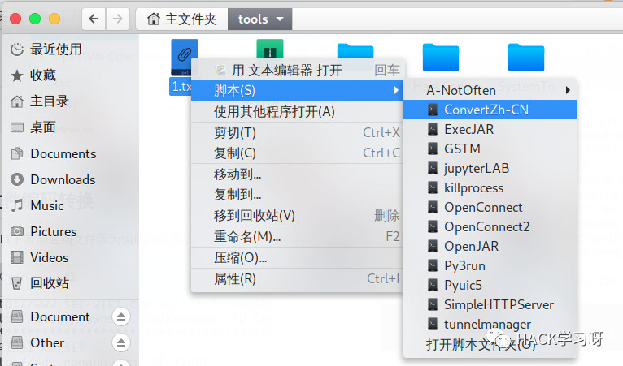
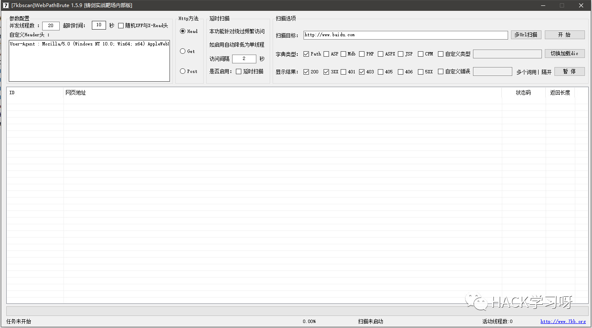

Kali Rolling安装之后的一些常用配置总结

Kali Rolling安装之后的一些常用配置总结
添加普通用户
useradd -m -G sudo,video,audio,cdrom -s /bin/bash ssooking
把某个用户添加到组中: sudo usermod -a 用户名 -G 组名
递归更改目录/文件所属用户组：sudo chgrp 用户名 -R MyDocuments/
递归更改目录/文件拥有者：sudo chown 用户名 -R MyDocuments/
一、更新升级
1.添加源：
vi /etc/apt/sources.list，比较好用的kali源
deb http://http.kali.org/kali kali-rolling main non-free contrib
deb http://mirrors.aliyun.com/debian stable main contrib non-free
deb http://mirrors.ustc.edu.cn/kali kali-rolling main non-free contrib
如果是其他系统导入kali源，比如ubuntu，需要导入kali公钥
apt-key adv --keyserver pgp.mit.edu --recv-keys ED444FF07D8D0BF6
2.更新软件列表并更新软件
apt-get update & apt-get upgrade -y
3.升级操作系统
apt-get dist-upgrade -y
如果软件包更新过程中临时中断，可以使用修复命令：
dpkg --configure -a
4.安装内核头文件
apt-get install linux-headers-$( uname -r )
清理系统软件包和内核：
uname –r 查看正在使用的内核
dpkg --get-selections | grep linux
删除不用的内核文件image、头文件headers：
apt-get purge 内核文件名 头文件名
5.清理系统
apt-get clean && apt-get autoclean && apt-get autoremove -y
详解：
apt-get remove 软件名 #删除相应的软件,但保留配置文件
apt-get purge 软件名 #同时清除软件包和软件的配置文件
apt-get clean #删除软件包缓存（/var/cache/apt/archives）
apt-get autoremove #自动清理无用的依赖包
清理系统残存配置:
dpkg -l |grep ^rc|awk '{print $2}' |sudo xargs dpkg -P
二、安装常用工具
谷歌拼音
apt-get install fcitx fcitx-googlepinyin
安装完毕后重启生效，打开Fcitx Configuration
点左下角那个“+” ，–> 去掉”仅显示当前语言”的勾 –> 找到“googlepinyin”并添加。默认使用ctrl+空格切换中英文输入法
截图工具flameshot
apt-get install flameshot
flameshot config #配置flameshot
flameshot gui #截图
去掉最后几项，这样截图界面会清爽很多。

在系统设置—Keyboard设置中添加快捷键

使用Ctrl+Alt+A快捷键截图试试

增加vpn支持
sudo apt-get install pptpd network-manager-openvpn network-manager-openvpn-gnome network-manager-pptp network-manager-pptp-gnome network-manager-strongswan network-manager-vpnc network-manager-vpnc-gnome
安装oh-my-zsh
apt-get install zsh
sh -c "$(curl -fsSL https://raw.github.com/robbyrussell/oh-my-zsh/master/tools/install.sh)"2
chsh -s /bin/zsh
使用蓝牙
apt-get install pi-bluetooth bluez bluez-firmware blueman
关键一点：添加pi用户到蓝牙组
usermod -G bluetooth -a pi
usermod -G bluetooth -a 用户名
一些必备工具
下面介绍一些非常好用的工具，apt可以直接安装
peek：GIF录制
catfish：文件快速搜素工具，类似windows上的Everything
bless：图形化的16进制编辑器
bleachbit：图形化垃圾清理工具
remmina：远程连接管理工具
filezilla：FTP客户端
cherrytree：本地知识树笔记工具
synapse：系统应用程序快速启动工具
其他值得独立安装的工具
WPS<http://www.wps.cn/product/wpslinux/>：office办公
QQ/TIM<https://github.com/askme765cs/Wine-QQ-TIM>：appimage版qq和tim
Wechat：weweChat<https://github.com/trazyn/weweChat> 、electronic-wechat<https://github.com/geeeeeeeeek/electronic-wechat>
typora<https://www.typora.io/>：markdown编辑器
sublime_text 3<http://www.sublimetext.com/>：代码编辑器
stacer<https://github.com/oguzhaninan/Stacer>：图形化系统优化管理工具
Falcon SQL Client<https://plot.ly/free-sql-client-download/>：支持多种数据库的连接管理工具
Franz<https://meetfranz.com/>：能够同时登录多个Mail、云盘、社交帐号等（基于web）的工具
Station<https://getstation.com/>：类似Franz，能够在一个软件中登录管理多个帐号，界面更好看
更多工具地址：https://www.linux-apps.com/
三、系统美化
全局设置:
主题文件：/usr/share/themes/
图标文件：/usr/share/icons/
背景壁纸：/usr/share/background/ 、 /usr/share/wallpapers
conky ：/etc/conky/
1.修改背景图片
/usr/share/images/desktop-base
login-background.png #进入系统界面的背景图
kali-grub.png #grub的背景图片(/usr/share/images/desktop-base)
kali-wallpaper_1024×786 #类似的都是桌面背景图
修改登录界面图片
/usr/share/gnome-shell/theme/KaliLogin.png
/usr/share/images/desktop-base desktop-grub.png kali-grub.png
2.修改主题
主题文件位置：
gnome主题网站：gnome-look.org<https://www.gnome-look.org/>
选择GTK主题
去 gnome-look.org<url:https://www.gnome-look.org/browse/cat/135/> 网站下载喜欢的GTK主题。这里我用的是McOS-MJV-Gnome-3.30 <url:https://www.opendesktop.org/p/1263666/>，把下载的theme包解压到/usr/share/themes下。
选择图标icons主题
这里我使用的是：Korla icon theme<url:https://www.opendesktop.org/p/1256209/> ，下载完后，把图标主题包解压到/usr/share/icons下。
选择鼠标主题
Cursors主题下载 <url:https://www.gnome-look.org/browse/cat/107/>，这里我用的是Breeze Black <url:https://www.opendesktop.org/p/999353/>,下载完后，把鼠标主题解压到/usr/share/icons下。
打开gnome-tweaks，在外观处选择对应主题

默认的窗口按钮在右边，gnome环境下，将其换到左边的命令为：
gsettings set org.gnome.desktop.wm.preferences button-layout 'close,maximize,minimize:'
整体效果

除了基本美化，还可以使用conky进行美化。
3.添加gnome插件
gnome提供了很多插件，用于丰富gnome功能，我们可以根据需要添加 gnome extensions<url:https://extensions.gnome.org/>来拓展功能。但是插件装的太多，会比较卡。插件存放路径：~/.local/share/gnome-shell/extensions/。
每次装完插件，我们可以按下Alt+F2— 输入r—回车 ，以此重启刷新gnome。
下面是一些插件举例：
AlternateTab Alt+Tab切换应用
Coverflow Alt-Tab 功能与AlternateTab相同，但提供了一个更酷炫的界面
Applications Menu 顶栏显示应用菜单，我比较少用，但刚从Windows切换过来的或许需要
Auto Move Windows 当应用创建窗口时自动移动到某个特定的工作空间
Caffeine 取消自动锁屏
Clipboard Indicator 剪贴板管理
Dash to Dock不解释
EasyScreenCast屏幕录像，做演示时比较方便 （kali默认安装）
Screenshot Tool屏幕截图工具，也具有一些简单的图片编辑功能
Sound Input & Output Device Chooser 更为方便地调节音量
Gnomodoro简易番茄钟
Time ++ 番茄钟，Todo-list，计时器等
Hide Top Bar 全屏时自动隐藏顶栏
Lock Keys 顶栏显示Numlock和Capslock的状态
NetSpeed 顶栏显示网速，喜欢简洁的Simple net speed也非常不错
OpenWeather顶栏显示天气情况，gnome自带的weather不支持顶栏显示，用起来不方便
Places Status Indicator为一些常用目录提供快速入口
system-monitor 顶栏显示CPU、内存、网速、温度、电池电量等信息，安装前需要解决依赖
四、优化设置
自定义快捷键延时截图
sudo apt-get install scrot
scrot -d 5 //延时5秒截图
在系统设置—Keyboard设置中添加快捷键
/bin/sh -c "scrot -d 5"

按下快捷键，延时5秒截图完毕后会自动保存到家目录下。
隐藏终端的用户信息
修改家目录的.bashrc文件，添加一行
export PS1='\[\033[01;31m\] >>> \[\033[00m\]:\[\033[01;34m\]\w\[\033[00m\]\$ '
效果如下：

右键文件编码转换
kali下常常遇到文本文件因为编码问题而显示乱码的情况

在~/.local/share/nautilus/scripts目录下新建一个bash文件ConvertZh-CN，内容为：
#!/bin/bash
iconv -f gb18030 -t utf-8 $NAUTILUS_SCRIPT_SELECTED_FILE_PATHS -o $NAUTILUS_SCRIPT_SELECTED_FILE_PATHS
下次遇到乱码的文件只需要右键选中，在scripts中选择对应处理脚本即可方便地进行转换了，例如：

右键功能拓展
主要是~/.local/share/nautilus/scripts目录下增加nautilus脚本文件。可以自己编写，也可以从网上下载，这里有很多。
五、常见问题
网络设备未托管
此问题表现症状可能是无法正常显示网络连接，比如无线：
vi /etc/NetworkManager/NetworkManager.conf
把 managed=false 的 false 改为true
右键创建文件功能
kali右键没有创建文件的功能，解决方法是，在家目录的Templates目录下放入你想要创建的模板类型即可
安装其他版本jdk
去oracle官网下载需要的jdk版本，比如jdk8<https://www.oracle.com/technetwork/java/javase/downloads/jdk8-downloads-2133151.html>，下载完毕后解压到/opt/目录下，然后编辑/etc/profile文件，添加以下内容：
export JAVA_HOME=/opt/jdk1.8.0_192
export JRE_HOME=${JAVA_HOME}/jre
export CLASSPATH=.:${JAVA_HOME}/lib:${JRE_HOME}/lib:$CLASSPATH
export JAVA_PATH=${JAVA_HOME}/bin:${JRE_HOME}/bin
export PATH=$PATH:${JAVA_PATH}
笔者遇到了添加环境变量但是不生效的问题，后来发现是受到kali上其他版本jdk的影响。
多java版本控制问题
1.查看相应的jdk是否在 kali linux的jdk菜单里，如果有，直接选择你想切换的版本:
update-alternatives --config java
update-alternatives --config javac
2.如果没有在菜单里可以进行添加：
update-alternatives --install /usr/bin/java java /opt/jdk1.8.0_121/bin/java 300
update-alternatives --install /usr/bin/javac javac /opt/jdk1.8.0_121/bin/javac 300
3.修改java版本
update-alternatives --config java
update-alternatives --config javac
注意：/opt/jdk1.8.0_121是自己安装的路径。300这个序号用于区分java版本，可以自定义但不能重复。
修复apt-add-repository命令
mv /usr/bin/add-apt-repository /usr/bin/add-apt-repository-bak
touch /usr/sbin/add-apt-repository && chmod +x /usr/sbin/add-apt-repository && vi /usr/sbin/add-apt-repository
添加以下内容：
#!/bin/bash
if [ $# -eq 1 ]
NM=`uname -a && date`
NAME=`echo $NM | md5sum | cut -f1 -d" "`
then
ppa_name=`echo "$1" | cut -d":" -f2 -s`
if [ -z "$ppa_name" ]
then
echo "PPA name not found"
echo "Utility to add PPA repositories in your debian machine"
echo "$0 ppa:user/ppa-name"
else
echo "$ppa_name"
echo "deb http://ppa.launchpad.net/$ppa_name/ubuntu xenial main" >> /etc/apt/sources.list
apt-get update >> /dev/null 2> /tmp/${NAME}_apt_add_key.txt
key=`cat /tmp/${NAME}_apt_add_key.txt | cut -d":" -f6 | cut -d" " -f3`
apt-key adv --keyserver keyserver.ubuntu.com --recv-keys $key
rm -rf /tmp/${NAME}_apt_add_key.txt
fi
else
echo "Utility to add PPA repositories in your debian machine"
echo "$0 ppa:user/ppa-name"
fi
修复wireshark启动报错
报错如下：
Lua: Error during loading:
/usr/share/wireshark/init.lua:32: dofile has been disabled due to running Wireshark as superuser. See https://wiki.wireshark.org/CaptureSetup/CapturePrivileges for help in running Wireshark as an unprivileged user
修改/usr/share/wireshark/init.lua文件，倒数第二行找到：
dofile(DATA_DIR.."console.lua")
# 改为
--dofile(DATA_DIR.."console.lua")
解决启动时默认静音问题
sudo apt-get install alsa-utils -y
解决root权限下无法运行chrome
修改/usr/bin/google-chrome-stable文件：
exec -a "$0" "$HERE/chrome" "$@" --no-sandbox --user-data-dir
chromium也而是类似，修改/usr/share/applications/chromium.desktop文件：
Exec=/usr/bin/chromium %U --no-sandbox --user-data-dir
在系统语言为英文的情况下，设置启动chrome时显示为中文
修改/usr/bin/google-chrome-stable文件，添加一行即可
export LANGUAGE=zh-cn /opt/google/chrome/google-chrome %U
vmware安装虚拟机增强工具
sudo apt-get install open-vm-tools-desktop
永久开启ip转发功能
echo "net.ipv4.ip_forward=1" >> /etc/sysctl.conf
ipv6网络转发：
echo 1 > /proc/sys/net/ipv6/conf/all/forwarding
一键安装配置脚本
#!/bin/bash
echo ""
echo "=========================================================================="
echo "= Kali Auto Init Tool ="
echo "= Powered by ssooking ="
echo "= https://ssooking.github.io ="
echo "=========================================================================="
echo ""
echo "[*] 即将自动对kali进行基本配置，建议你根据需要修改脚本。安装配置过程可能需要一会儿，并且由你的网速决定...."
read -p "[*] 请按任意键继续...."
echo "[+] 添加kali源"
apt-key adv --recv ED444FF07D8D0BF6
echo "deb http://http.kali.org/kali kali-rolling main non-free contrib" >> /etc/apt/sources.list
echo "deb http://mirrors.ustc.edu.cn/kali kali-rolling main non-free contrib" >> /etc/apt/sources.list
echo "deb http://mirrors.aliyun.com/debian stable main contrib non-free" >> /etc/apt/sources.list
echo "[ok] 添加kali源成功！"
echo ""
echo "[+] 添加一个普通用户"
read -p "请输入用户名: " username
useradd -m -G sudo,video,audio,cdrom -s /bin/bash $username
echo "请设置用户密码："
passwd $username
echo "[ok] 添加普通用户成功！"
echo ""
# 安装内核头文件
echo "[+] 安装内核头文件... "
apt-get -y install linux-headers-$(uname -r)
echo ""
echo "[ok] 内核头文件安装成功！"
echo ""
# 解决kali启动时静音问题
echo "[+] 安装 alsa-utils 解决kali启动时静音问题"
apt-get -y install alsa-utils
echo "[ok] 安装 alsa-utils 成功！"
echo ""
echo "[+] 添加PPPoE拨号连接功能"
apt-get install pppoe pppoeconf
echo "[ok] 安装PPPoE成功!"
echo " >> 你可以使用 nm-connection-editor 命令管理pppoe连接"
echo ""
echo "[+] 添加VPN支持: PPTP IPsec/IKEv2 vpnc network-manager-ssh"
apt-get -y install network-manager-pptp network-manager-pptp-gnome network-manager-strongswan network-manager-vpnc network-manager-vpnc-gnome network-manager-ssh
echo "[ok] 成功添加vpn支持!"
echo ""
# Base Tool
echo "[+] 安装一些必备系统工具：谷歌拼音输入法、垃圾清理工具、截图工具、快速启动工具、软件包管理工具等"
apt-get -y install fcitx fcitx-googlepinyin flameshot bleachbit gdebi synaptic synapse catfish scrot vokoscreen chromium
echo "[ok] 成功安装系统必备软件!"
echo ""
# Server Tools
echo "[+] 安装服务器连接管理工具：remmina、filezilla"
apt-get -y install remmina filezilla
echo "[ok] 安装服务器连接管理工具成功!"
echo ""
# 美化
echo "[+] 设置窗口按钮到左侧"
gsettings set org.gnome.desktop.wm.preferences button-layout 'close,maximize,minimize:'
echo "[ok] 设置窗口按钮到左侧成功！"
echo ""
echo "[+] 安装中文字体"
apt-get -y install fonts-wqy-microhei fonts-wqy-zenhei
echo "[ok] 安装中文字体成功！"
echo ""
echo "[+] 安装基本美化工具"
apt-get -y install zsh screenfetch neofetch figlet peek
#apt-get -y install cairo-dock
echo "[ok] 安装成功！"
echo ""
echo "[+] 删除无用主题"
cd /usr/share/themes/ && rm -rf Albatross Blackbird Bluebird HighContrast Greybird*
echo "[ok] 删除成功！"
# Security Tools
echo "[+] 安装图形化十六进制编辑器bless"
apt-get -y install bless
echo "[ok] 安装成功！"
echo ""
echo "[+] 安装firewalld防火墙及iptables图形化管理工具gufw "
apt-get -y install gufw firewalld firewall-applet
#systemctl enable firewalld.service
echo "[ok] 安装成功！"
echo ""
# Install sublime text 3
echo "[+] 安装sublime text 3，速度可能会比较慢"
wget -qO - https://download.sublimetext.com/sublimehq-pub.gpg | sudo apt-key add -
sudo apt-get install apt-transport-https
echo "deb https://download.sublimetext.com/ apt/stable/" | sudo tee /etc/apt/sources.list.d/sublime-text.list
apt-get update
apt-get install sublime-text
echo "[+] 解决sublime-text 中文输入问题"
git clone https://github.com/lyfeyaj/sublime-text-imfix.git
cd sublime-text-imfix
cp ./lib/libsublime-imfix.so /opt/sublime_text/ && cp ./src/subl /usr/bin/
echo "[ok] 修复成功。输入subl命令启动sublime text即可输入中文！"
echo ""
# Install typora
echo "[+] 安装 typora，速度可能会比较慢"
sudo apt-key adv --keyserver keyserver.ubuntu.com --recv-keys BA300B7755AFCFAE
echo "deb http://typora.io linux/" | sudo tee /etc/apt/sources.list.d/typora.list
sudo apt-get update -y
sudo apt-get install typora
echo ""
echo "[+] 安装 node npm"
wget https://npm.taobao.org/mirrors/node/v8.9.3/node-v8.9.3.tar.gz
tar zxvf node-v8.9.3.tar.gz && mv node-v8.9.3-linux-x64 /opt
ln -s /opt/node-v8.9.3-linux-x64/bin/node /usr/local/bin/node
ln -s /opt/node-v8.9.3-linux-x64/bin/npm /usr/local/bin/npm
rm ~/node-v8.9.3.tar.gz
echo ""
echo "[+] 清除垃圾 ......"
apt-get clean && apt-get autoclean && apt-get autoremove -y
echo "[+] Cleaning OK!"
# Install oh-my-zsh
# 普通用户就以普通权限安装
apt-get install zsh
echo "[+] Install oh-my-zsh"
sh -c "$(curl -fsSL https://raw.github.com/robbyrussell/oh-my-zsh/master/tools/install.sh)"
echo " Setting oh-my-zsh be the default terminal"
chsh -s /bin/zsh
echo ""
neofetch
echo "[OK] 所有任务完成!"
7KB新版-Web路径暴力探测工具

下载地址：https://github.com/7kbstorm/7kbscan-WebPathBrute
来源：ssooking博客
地址：https://ssooking.github.io